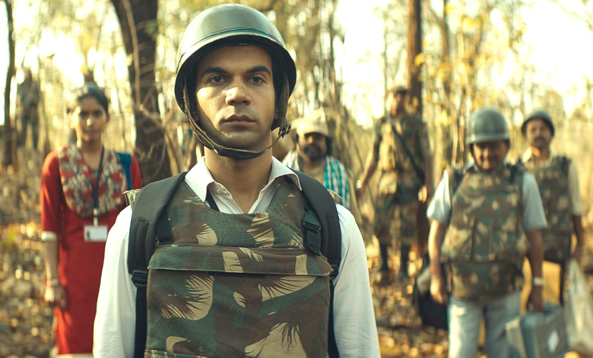
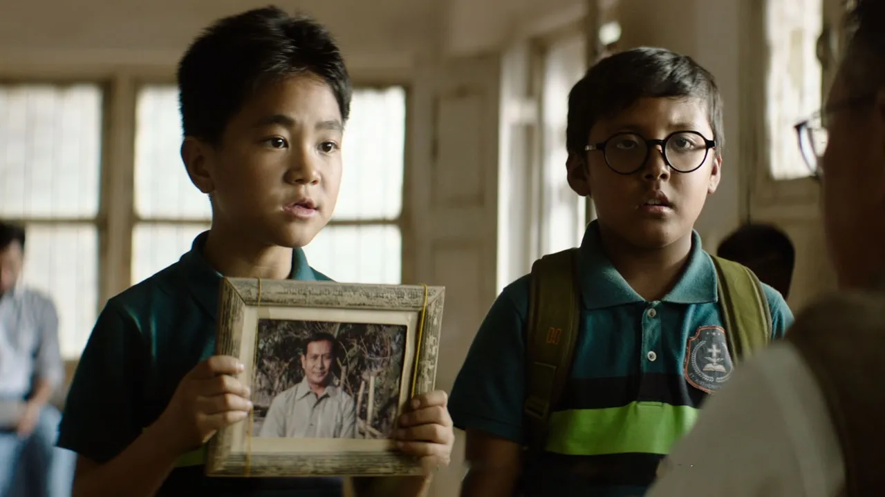
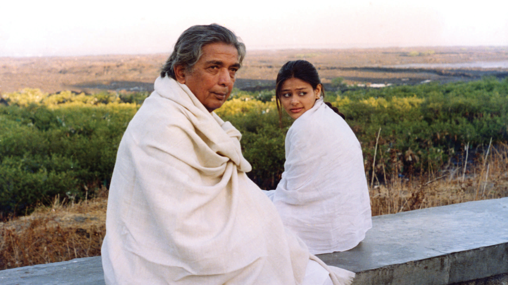
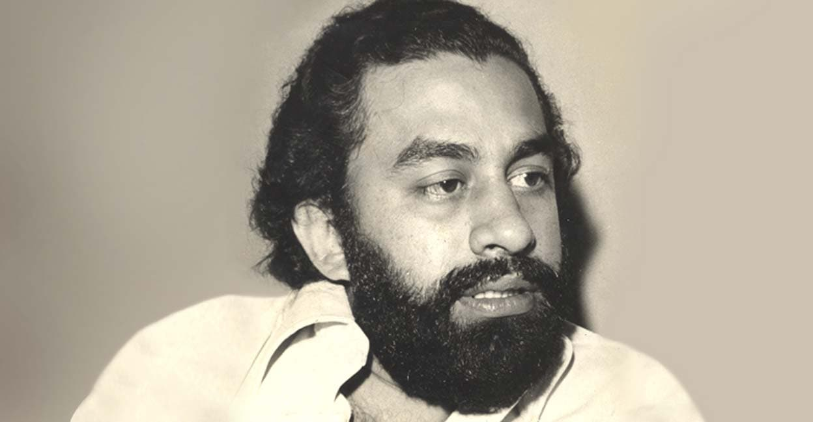

Department 01 · Cinema / OTT
Cinema & OTT
Essays on the film industry, television and streaming — production cultures, stardom, distribution and the platforms remaking who watches what, and where.

The Ordinariness of Rajkummar Rao Devika Menon On a leading man built from restraint, and what the industry does with an actor who refuses to be larger than life.
What the Child Knows Ritika Bose Childhood as a vantage point in recent Indian film — what the young protagonist is allowed to see, and to say.
Kaifi Azmi: Romancing the Revolution Saif Mahmood The poet in the studio: Urdu verse, the progressive movement and the Hindi film song.
When Women Desire: Sexuality and Agency in P. Padmarajan’s Films Meera Pillai Desire, refusal and consequence in the Malayalam auteur’s women, four decades on.